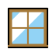
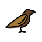
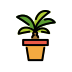
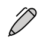

오늘도 여기까지 잘 왔어요.
마음쉼
지금은 아무것도 해결하지 않아도 괜찮아요.



그래픽: OpenMoji(CC BY-SA 4.0), Google Material Icons(Apache 2.0)
천천히 들이마셔요
오늘도 여기까지 잘 왔어요.




그래픽: OpenMoji(CC BY-SA 4.0), Google Material Icons(Apache 2.0)